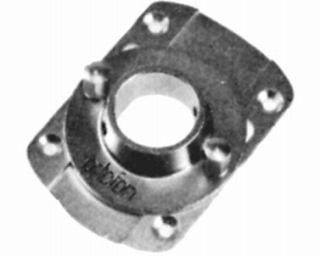
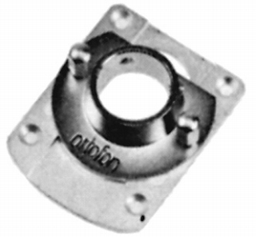
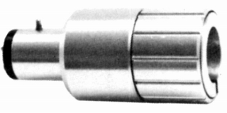
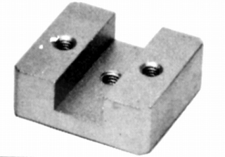
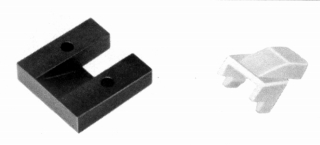
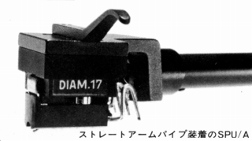
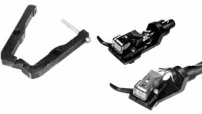
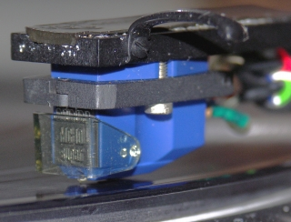
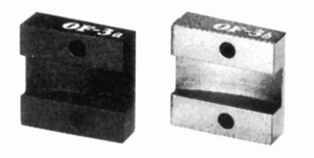

社外のアクセサリー
カートリッジの王者といっても過言ではないのがオルトフォンであり、社外にもアクセサリーが存在する。
�@AUDIONIXのアクセサリー
1970年代にオルトフォンの代理店であったAUDIONIX（オーディオニックス）のアクセサリー。
準純正ともいうべき存在だが、同様のものが80年代のハーマン時代に純正品として販売
されており、実質的には同じものなのかもしれない。これらをオルトフォン製とする
資料もあるがスライドベースなど同種のものについて別の型番を取っている為、
当サイトではAUDIONIX（オーディオニックス）製と判断する。
なおワンポイントウェイトOP-1は1970年代も「オルトフォン」製だった。
スライドベース
AG-�T

■価格 5,900円
■備考 一般のトーンアームでSPU-Aを併用するときのスライドベース
AG-�U

■価格 5,900円
■備考 一般のトーンアームでSPU-Aを併用するときのスライドベース
純正品「SB-�U」とほぼ同じ。
Aシェル用アダプター

■価格 3,800円
■備考 一般のトーンアームでSPU-Aを使用する時のアダプター
�AFRのアクセサリー
オルトフォン取付台

■価格 1,050円
■備考 自社のアームのシェルにSPUシリーズの
中身を取り付けるアダプター。
�Bオーディオクラフトのアクセサリー
OF-1

■価格 3,200円
■備考 SPUシリーズ用の
ストレート型アームパイプ・ダイレクト装着アダプター。

OF-2

■価格 4,300円
■備考 MC-30,20,10(MK�U含む）、SL-20用
グレードアップアダプター。
ボディの強度不足解消と、
ヘッドシェルとの密着性を改善。
真鍮製、重量6.2g。

（管理人所有機 MC10Superに装着した）
OF-3(a,b)

■価格 5,000円
■備考 OF-1と同様のSPUシリーズ用の
ストレート型アームパイプ・ダイレクト装着アダプター。
OF-3aが約3g、OF-3bが約10g。